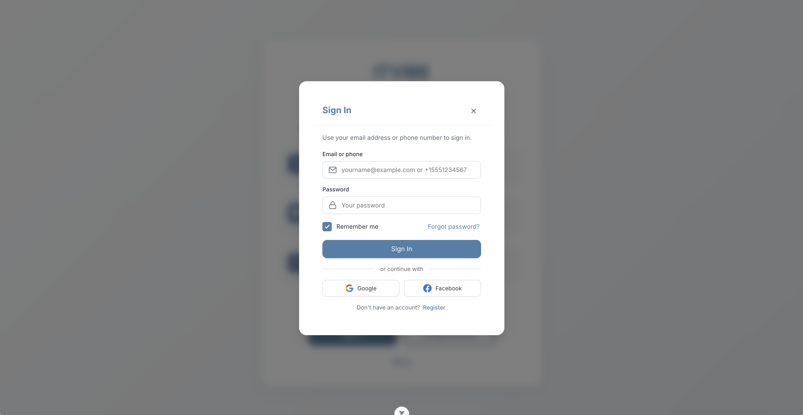
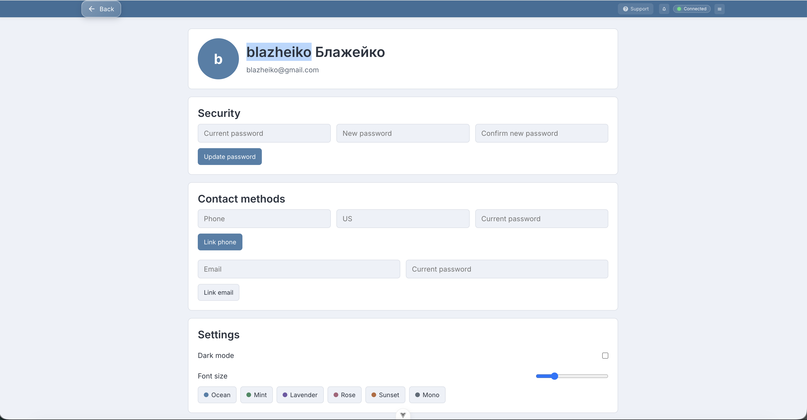
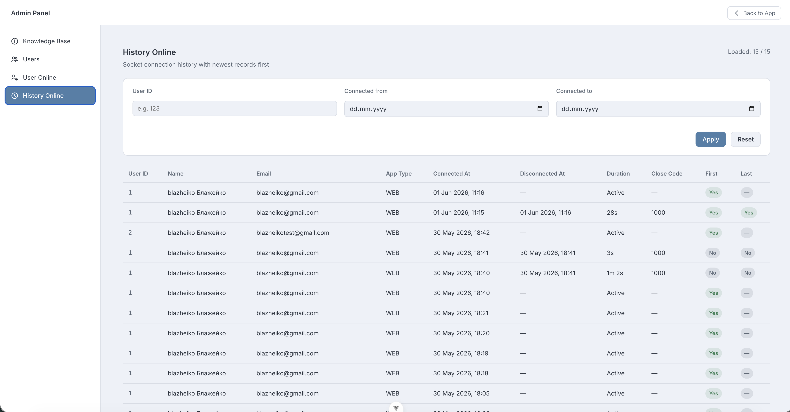
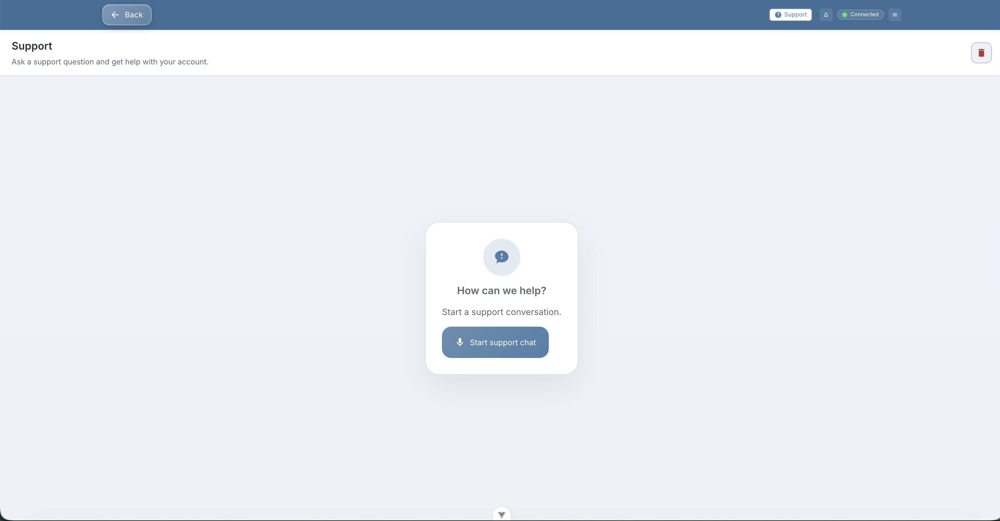
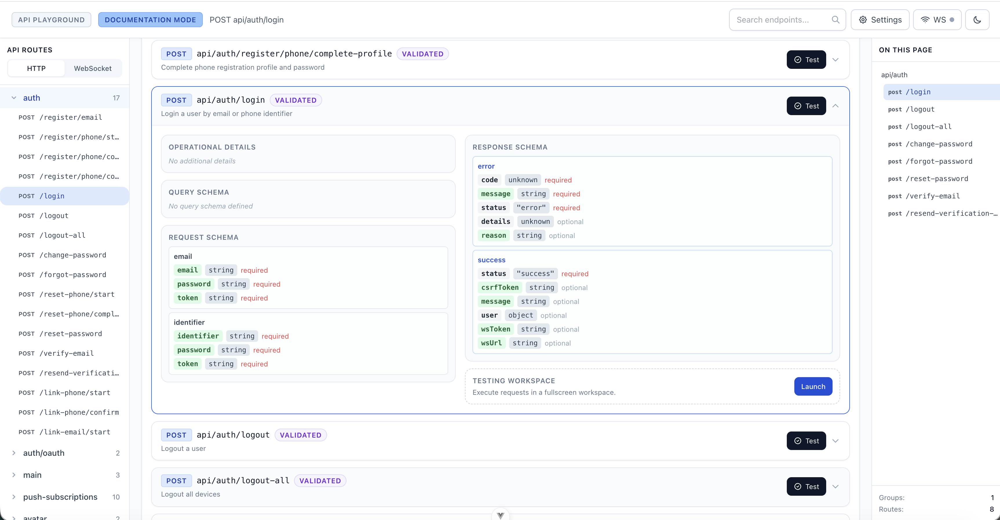

Монорепозиторій для швидкого старту production-ready SPA: Vue 3 фронтенд, високопродуктивний uWebSockets.js бекенд і спільний пакет контрактів, типобезпечний з обох боків.
Шаблон створено для швидкого запуску SPA-застосунків. Замість того щоб щоразу налаштовувати однаковий фундамент, ви стартуєте з робочого застосунку, де вже є те, що потрібно більшості продуктів з першого дня.
Cookies, CSRF (synchronizer-token), CORS, CSP, тротлінг, ролі та guard-и.
WebSocket на uWebSockets.js, presence, координація між інстансами через Redis.
PostgreSQL + Drizzle ORM: міграції, схеми, Drizzle Studio.
Схеми, enum-и, guard-и та responses, що перевикористовуються на фронті й беку.
S3/MinIO, пошта (SMTP), push, AI-провайдери, Telegram.
Sentry для помилок і трасування, структуроване логування Pino.
Фронтенд і бекенд спілкуються через HTTP + WebSocket і поділяють єдиний пакет контрактів — форми запитів/відповідей перевіряються типами з обох боків.
Бекенд — шарувата архітектура: repository → transformer → service → controller → route.
Готові екрани з коробки — не лише код, а робочий продукт.
docs/screenshots/login.png
docs/screenshots/account.png
docs/screenshots/admin.png
docs/screenshots/support.png
docs/screenshots/playground.png
Можлива адаптація — backend-only / API. Основний сценарій —
production-ready SPA, але можна прибрати пакет
frontend, вимкнути статику
(SERVE_STATIC=false) і
сесії/CSRF та залишити бекенд + api-playground для ручного тесту API.
| Фіча | Потребує |
|---|---|
| Підтвердження email / скидання пароля | SMTP_* (SMTP_ENABLED=true) |
| Авторизація за телефоном | AUTH_PHONE_ENABLED=true + SMS-провайдер |
| Push-сповіщення | VAPID_* ключі |
| Завантаження аватарів / скриншоти KB | S3 або MinIO (S3_*) |
| AI-підтримка | OPENAI_API_KEY / XAI_API_KEY / MISTRAL_API_KEY |
| Presence / сесії / тротлінг | Redis |
| Моніторинг помилок | SENTRY_DSN |
Cookie-сесії в Redis, synchronizer-token CSRF із ротацією на login/logout, режим report-only до ввімкнення enforce.
Білий список origin-ів, довіра до проксі лише за
TRUSTED_PROXY_CIDRS,
тротлінг за реальним IP.
Політика директивами у
config/csp.ts +
reportOnly для безпечного
викату.
CSP як директиви, а не «магічний рядок».
script-src,
style-src,
img-src,
connect-src,
frame-ancestors та інші
налаштовуються в одному місці; connect-src
залежить від середовища (суворіше у production, м'якше локально).
Заголовок видається на HTML-відповідях зі static-сервера —
опційно (вмикається в коді), розкочуйте з
reportOnly: true.
# 1. Встановити залежності воркспейсу
pnpm install
# 2. Налаштувати оточення бекенду
cp packages/backend/.env.example packages/backend/.env
# 3. Зібрати shared і запустити backend + frontend
pnpm dev
Для базового старту достатньо PostgreSQL; Redis потрібен для повної
auth/realtime поведінки. ./init.sh
проганяє install → typecheck → lint → test → build.
Групи маршрутів у
src/app/routes/http-routes.ts:
спільний префікс і middleware-и для всієї групи.
// src/app/routes/http-routes.ts
{
prefix: "avatar",
middlewares: ["session_web", "csrf_guard", "auth_guard"],
group: [
defineRoute({
url: "/upload",
method: "post",
handler: AvatarController.uploadAvatar.bind(AvatarController),
allowedContentTypes: ["multipart"], // для файлів
validator: EmptyFormInputSchema, // ArkType зі shared
ResponseSchema: ResponseSchemas.UploadAvatarResponseSchema,
description: "Upload user avatar",
}),
],
}Типізований payload → виклик сервісу → мапінг помилок на HTTP-коди. Бізнес-логіки та SQL тут немає.
async login(context: HttpContext<LoginInput>): Promise<LoginResponse> {
const payload = getTypedPayload(context); // типізовано як LoginInput
const result = await authService.login(payload, context.auth, context.session);
if (Result.isError(result)) {
return mapControllerError(context, result.error);
}
return result.value; // { status, user, wsUrl, wsToken }
}server.ts:params429 · 413 / 415400session_web → csrf_guard → auth_guard.envpnpm devgit clone <repo> my-product && cd my-product
pnpm install && cp packages/backend/.env.example packages/backend/.env
pnpm devУся інфраструктура вже зроблена: авторизація, реалтайм, push, PWA, сховище, пошта, AI та типобезпечні контракти. Ви фокусуєтесь на фічах свого продукту з першого комміту.